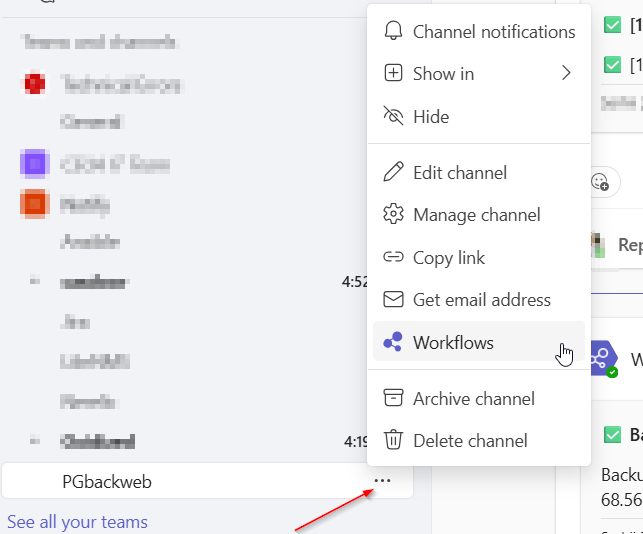
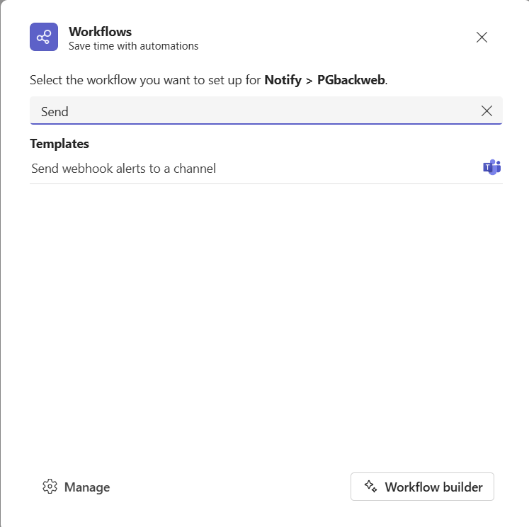
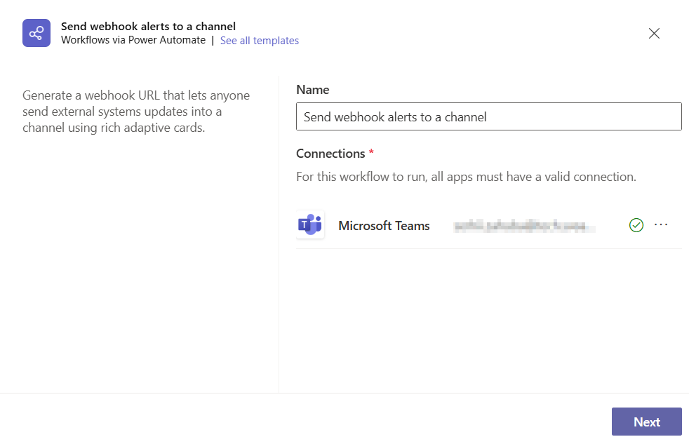
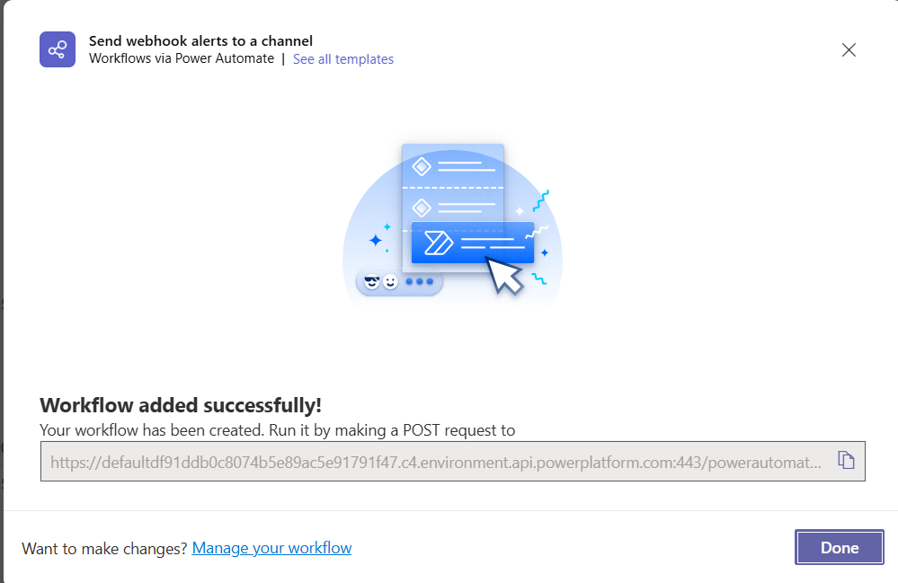

How to send notifications from Postgresus to Microsoft Teams
To send notifications to Microsoft Teams you will:
How to create a Power Automate URL (inside Teams)
1 Open Teams and go to the Teams section on the left side
If you don't have a group yet, create it as shown in the screenshot, if it already exists, then go to section #2

2 Creation of flow
Select the desired channel and click on the three dots. Then select Workflows
3 Create the flow (HTTP trigger)
In the new window, select the flow type - Send webhook alerts to a channel.
4 (Optional) If necessary, you can change the name of the Flow (optional)
The name Flow does not affect its operation.
5 (Optional)You can choose which channel to send Flow to.

6 Save and copy the HTTP URL
At the bottom of the window you will have a url that you need to copy and paste into the Postgresus settings.
Connect the URL in Postgresus
- Open Postgresus.
- Go to Settings → Notifiers → Teams.
- Paste the URL you copied from Teams.
- Click Send test notification in Postgresus and check the chosen Teams channel for the message.

🎉 Setup Complete!
Your Power Automate flow is connected. Postgresus can now send backup notifications directly to your selected Microsoft Teams chat or channel.